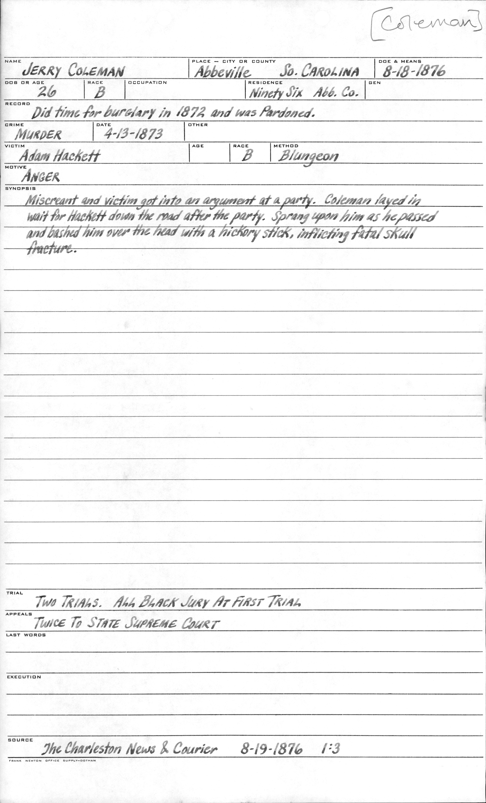
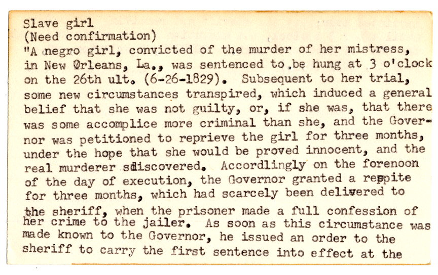

<!doctype html>
<html lang="en">
    <head>
        <meta charset="utf-8">
        <title>Providing Computational Access to Records of American Capital Punishment
</title>
        <link rel="stylesheet" href="css/reveal.css">
        <link rel="stylesheet" href="css/theme/serif.css" id="theme">
        <!-- For syntax highlighting -->
        <link rel="stylesheet" href="lib/css/zenburn.css">

        <!-- If the query includes 'print-pdf', use the PDF print sheet -->
        <script>
          document.write( '<link rel="stylesheet" href="css/print/' + ( window.location.search.match( /print-pdf/gi ) ? 'pdf' : 'paper' ) + '.css" type="text/css" media="print">' );
        </script>
    </head>
    <body>

        <div class="reveal">
            <div class="slides"><script type="text/template">---
title: Describing Web Archives with the Partner Data API
revealOptions:
    transition: 'fade'
</script><section  data-markdown><script type="text/template">
<style>
#fLeft {float: left; max-width: 60%; text-align: left;}
#fRight {float: right; max-width: 40%; text-align: left;}
#fRight img {margin: 20px;}
#smallLink {font-size: 18px;}
.whitebg {background-color: #fff; margin-top: 30% !important; padding: 15px !important; border-radius: 15px;}
.altText {background-color: #fff; bottom: 30px; position: fixed; padding: 15px !important; border-radius: 5px;}
section {height:100%}
.pullDown {height:auto}
</style>

### Providing Computational Access to Records of American Capital Punishment
<br/>
<h5>Gregory Wiedeman</h5>
<h5> University Archivist</h5>
<h5> University at Albany, SUNY</h5>
<h5>  @GregWiedeman</h5>
<h5> Code4Lib 2019</h5>

</script></section><section class="pullDown" data-markdown><script type="text/template">
### National Death Penalty Archive

<div id="fLeft">
UAlbany collects records from researchers, writers, and activists related to capital punishment in the United States as part of the <a href="https://archives.albany.edu/static/91.html">National Death Penalty Archive</a>.
</div>
<div id="fRight">

</div>
</script></section><section  data-markdown><script type="text/template">
<div id="fLeft">
<h3>Watt Espy Papers</h3>
The most complete set of extant records of American executions.
<ul>
<br/>
<li>24,036 sides of index cards</li>
<li>A 101,566 pages of reference materials
<ul>
<li>Copies of Correctional Records</li>
<li>Copies of newspapers and published sources</li>
<li>Written notes</li>
</ul>
</li>
</ul>
</div>
<div id="fRight">
	
</div>
</script></section><section  data-markdown><script type="text/template">
<!-- .slide: data-background="https://library.albany.edu/sites/all/themes/New_UArchives/img/1900/ndpa1.jpg" alt="Test" -->

<p class="altText">Image of Index card summaries of executions.</p>
</script></section><section  data-markdown><script type="text/template">
### The ESPY File

* <a href="https://www.icpsr.umich.edu/icpsrweb/NACJD/studies/8451/summary">NSF-funded project</a> in 1984 to create a dataset from the collection.
    * "The most often cited and used list of America’s legal executions"
* Researchers have traveled to view discrepancies with the source material
* Paul H. Blackman and Vance McLaughlin, <a href="https://doi.org/10.1177/1088767911418054">The Espy File on American Executions: User Beware</a> (2011)
</script></section><section  data-markdown><script type="text/template">
#### Computational Analysis and the Death Penalty

* <i>Furman v. Georgia</i> (1972)
* <i>Gregg v. Georgia</i>, etc. (1976)
* Marvin Wolfgang and Marc Riedel Study (1973) and <i>Maxwell v. Bishop</i>
* David Baldus-led Georgia Study
* <i>McCleskey v. Kemp </i> (1987)
	* Found "racially disproportionate impact"
	* invalidated statistical analysis for 14th amendment claims
* <i>Miller-El v. Dretke</i> (2005)
    * Utilized statistical analysis for <i>Batson</i> challenge
</script></section><section  data-markdown><script type="text/template">
### <a href="http://registry.clir.org/projects/23081088">The Digital Archive of Executions in the United States, 1608-2002</a>
<div style="margin: 30px;">
<ul>
<li>CLIR-funded digitization project</li>
<li>Provide context to data points</li>
<li>API access to underlying data</li>
</ul>
</div>


<div id="fLeft">

</div>
<div id="fRight">


</div>
</script></section><section  data-markdown><script type="text/template">
### The "We"

<div id="fLeft">
<ul>
<li>3 archivists</li>
	<ul>
		<li>Mark Wolfe</li>
		<li>Melissa McMullen</li>
		<li>Me</li>
	</ul>
</ul>
<ul>
<li>Graduate Student Assistants</li>
	<ul>
		<li>Amanda Partridge</li>
		<li>Sheri Sarnoff</li>
		<li>Miles Lawlor</li>
	</ul>
</ul>
</div>
<div id="fRight">
<ul>
<li>Library Systems Staff (partial support)</li>
	<ul>
		<li>Department Head</li>
		<li>Systems Administrator</li>
		<li>Web Developer</li>
		<li>Database Administrator</li>
	</ul>
</ul>
</div>
	
</script></section><section  data-markdown><script type="text/template">

### Supporting Open-Source at UAlbany

* Systems and University staff had experience with enterprise systems
* On-site virtualized data center
* CLIR Grant demonstrated the value of the work we could do with more technology
* Archivists and Systems staff learned together collaboratively
	* Archivists took hands-on role with Rails, adapting and configuring systems
* Sustainability a work in progress
* Dependent on maintainers and open source community

</script></section><section  data-markdown><script type="text/template">
### Espy Metadata Creation Tool

* Samvera and Hyrax are Rails applications
* "Ramp up" plan for repository implementation and maintenance
* Makes connections between 4 difference sources
	* Small Index Cards
	* Large Index Cards
	* Reference Material
	* Espy File data
* Create new Espy Records backed by Data Model
* Make the computer do the boring work
* Focus on intellectual process of metadata creation
</script></section><section  data-markdown><script type="text/template">
<!-- .slide: data-background="img/espy1.png" -->

<p class="altText">Screenshot of metadata creation tool to link records with redis autocomplete.</p>
</script></section><section  data-markdown><script type="text/template">
<!-- .slide: data-background="img/espy3.png" -->

<p class="altText">Screenshot of metadata creation tool displaying three types of source material.</p>
</script></section><section  data-markdown><script type="text/template">


</script></section><section  data-markdown><script type="text/template">
<div id="fLeft">
<h4>Metadata Matters</h4>
<ul>
<li>Espy File data demonstrated creators’ 
priorities, values, and mental framing 
that are inappropriate or conflict with 
our own</li>
</ul>

</div>
<div id="fRight">
	<ul>
	<li>Occupation:
	<ul>
	<li>"Armed robber"</li>
	<li>"Asylum Escapee"</li>
	<li>"Bandit"</li>
	<li>"Criminal"</li>
	<li>"Cult Leader"</li>
	<li>"Gang Member"</li>
	<li>"Lunatic"</li>
	<li>"Male Nurse"</li>
	<li>"Retarded"</li>
	<li>"Slave"</li>
	<li>"Student"</li>
	</ul>
	</li>
	</ul>
</div>
</script></section><section  data-markdown><script type="text/template">
### Metadata Matters

* General Data Improvements
	* "Crime Committed" changed to "Crime Convicted"
	* Added Date of Conviction to Date of Execution
	* ISO dates
	* First and last name in individual fields
	* Sex to become gender assigned
* Race does not conform to an established standard
* Feedback welcome!
</script></section><section  data-markdown><script type="text/template">
### "Unconfirmed" cases


</script></section><section  data-markdown><script type="text/template">
<div id="fLeft">

</div>
<div id="fRight">

</div>
</script></section><section  data-markdown><script type="text/template">
### "Unconfirmed" cases

<div id="fLeft">
<ul>
<li>Added over 6,000 records</li>
	<ul>
		<li>Real number will be smaller after disambiguation</li>
	</ul>
<li>15,254 to 21,325 known executions</li>
<li>Documented and underdocumented</li>
</ul>
</div>
<div id="fRight">
	
</div>
   
</script></section><section  data-markdown><script type="text/template">
### Linked Data Problems

* Hard to find vocabularies with sufficient precision
* Create one?
	* Access to expertise, School of Criminal Justice, Advisory Board
* Issues with digital archival objects as well
* Archives may have a fundamental mission conflict with linked data
	* Archival description manages objects with minimal metadata by relying on context
	* Archives don't aim to create objective/authoritative data

</script></section><section  data-markdown><script type="text/template">
<!-- .slide: data-background="img/c4l-arclight1.png" -->
<p class="altText">Screenshot of ArcLight, which is used with Hyrax and NCSU's Quicksearch to provide access.</p>
</script></section><section  data-markdown><script type="text/template">
<!-- .slide: data-background="img/c4l-arclight2.png" -->
<p class="altText">Screenshot of ArcLight showing links to contextual archival description.</p>
</script></section><section  data-markdown><script type="text/template">
<!-- .slide: data-background="img/c4l-arclight3.png" -->
<p class="altText">Screenshot of ArcLight highlighing links to contextual archival description.</p>
</script></section><section  data-markdown><script type="text/template">
<!-- .slide: data-background="img/arclight3.png" -->
<p class="altText">Screenshot of JSON API provided by ArcLight.</p>
</script></section><section  data-markdown><script type="text/template">
<!-- .slide: data-background="img/c4l-hyrax1.png" -->
<p class="altText" style="width:50%">Screenshot of document in Hyrax with contextual links provided by ArcLight API.</p>
</script></section><section  data-markdown><script type="text/template">
##### Providing Computational Access to Records of American Capital Punishment
##### Gregory Wiedeman -- University at Albany, SUNY
<dl>
<dt>Hyrax/Arclight/Quicksearch Frontend</dt><dd><a href="https://archives.albany.edu">https://archives.albany.edu</a></dd>
<dt>Espy Metadata Creation Tool</dt><dd><a href="https://github.com/UAlbanyArchives/espyMetadata">https://github.com/UAlbanyArchives/espyMetadata</a></dd>
<dt>UAlbany Hyrax</dt><dd><a href="https://github.com/UAlbanyArchives/hyrax-UAlbany">https://github.com/UAlbanyArchives/hyrax-UAlbany</a></dd>
<dt>UAlbany ArcLight</dt><dd><a href="https://github.com/UAlbanyArchives/arclight-UAlbany">https://github.com/UAlbanyArchives/arclight-UAlbany</a></dd>
<dt>Quicksearch Theme, Searchers for Hyrax and ArcLight</dt><dd><a href="https://github.com/UAlbanyArchives?utf8=%E2%9C%93&tab=repositories&q=quick&type=&language=">https://github.com/UAlbanyArchives</a></dd>
</dl>
</script></section></div>
        </div>

        <script src="lib/js/head.min.js"></script>
        <script src="js/reveal.js"></script>

        <script>
            function extend() {
              var target = {};
              for (var i = 0; i < arguments.length; i++) {
                var source = arguments[i];
                for (var key in source) {
                  if (source.hasOwnProperty(key)) {
                    target[key] = source[key];
                  }
                }
              }
              return target;
            }

            // Optional libraries used to extend on reveal.js
            var deps = [
              { src: 'lib/js/classList.js', condition: function() { return !document.body.classList; } },
              { src: 'plugin/markdown/marked.js', condition: function() { return !!document.querySelector('[data-markdown]'); } },
              { src: 'plugin/markdown/markdown.js', condition: function() { return !!document.querySelector('[data-markdown]'); } },
              { src: 'plugin/highlight/highlight.js', async: true, callback: function() { hljs.initHighlightingOnLoad(); } },
              { src: 'plugin/notes/notes.js', async: true, condition: function() { return !!document.body.classList; } },
              { src: 'plugin/math/math.js', async: true }
            ];

            // default options to init reveal.js
            var defaultOptions = {
              controls: true,
              progress: true,
              history: true,
              center: true,
              transition: 'default',
              dependencies: deps
            };

            // options from URL query string
            var queryOptions = Reveal.getQueryHash() || {};

            var options = {
  "transition": "fade"
};
            options = extend(defaultOptions, options, queryOptions);
            Reveal.initialize(options);
        </script>
        
          <script src="/scripts/slides"></script>
    </body>
</html>
